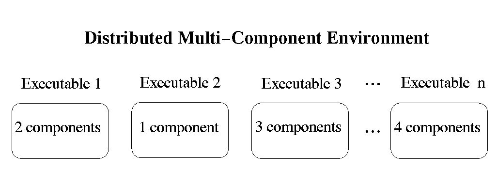

More explanation and source code as a tar file here or access the individual files as follows:
For more information, please go to web page:
http://www.nersc.gov/research/SCG/acpi/MPH
Last modified January 8, 2002.
 Back to NERSC ACPI Homepage
Back to NERSC ACPI Homepage

Each executable resides on a set of SMP nodes.
Components within an executable may overlap on different nodes or processors.
MPH contains the following functionality:
More explanation and source code as a tar file here or access the individual files as follows:
For more information, please go to web page:
http://www.nersc.gov/research/SCG/acpi/MPH
Last modified January 8, 2002.
Back to NERSC ACPI Homepage